Ken Noble - Royal Navy 1943 - 1946
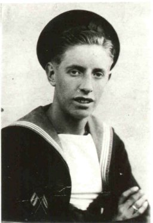
Ken Noble (JX671179) volunteered for service in the Royal Navy on 31 August 1943, aged 17. It was just before his 18th birthday, thus avoiding conscription into another service. Coming from Nottingham he opted to volunteer for the Royal Navy in a bid to escape conscription into the coal mines of Nottinghamshire. Ken must have impressed recruiters as he was graded as a possible candidate for naval signals.
In October 1943 Ken was called up for service and told to report to HMS Royal Arthur on 3 November 1943. Special trains were chartered to bring new recruits to the former Butlins Holiday Camp at Ingoldmells near Skegness. This was a central reception depot for new recruits where they were processed and kitted out before onward transfer for training. He was at Royal Arthur for just 9 days in November 1943 before transfer to HMS Scotia. Scotia was another former Butlins Holiday Camp at Doonfoot, near Ayr in Scotland and Ken arrived there on 14 November 1943. Scotia was a 'new entry training establishment' for signals and basic training. The course of training was very intensive and included all forms of signalling, morse sending and receiving by W/T (wireless telegraphy), lamp and flag signalling, semiphore and signal flags on a mast. The Signal School had a 60 foot mast that recruits had to learn to climb. Every movement between each period of training was done at 'double march' and there was plenty of drill and route marches. At the completion of basic training Ken sat and passed his first set of exams in elementary telegraphy.
After 5 months of basic training in Scotland Ken was transferred to HMS Mercury. Mercury was the new Royal Naval Signal School based at Leydene House, Eat Meon, near Petersfield, Hampshire. At the commencement of hostilities a number of facilities had been moved out of Portsmouth and the Signal School was one of them. Mercury received recruits for 'pre-joining signals training' prior to deployment to a ship. Ken arrived there in April 1944 and training lasted for one month. At the completion of training Ken sat a further exam and then received 14 days leave (pre-foreign service) but it is unlikely that he would have known where he was being posted.
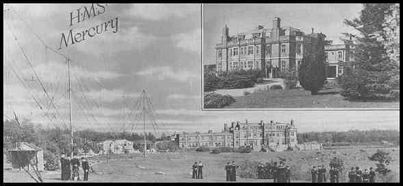
On 1 May 1944, after six months training, Ken was finally posted to active service and was assigned to HMS Lanka. Lanka was a signal station in Colombo, Sri Lanka and was a depot of the Royal Navy Eastern Fleet. Ken was to spend all of his war service as part of the Eastern Fleet (later called the British East Indies Fleet). HMS Lanka was Ken's 'home base' but his actual posting was to HMS Simbra in the Indian Ocean.
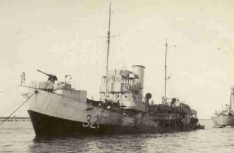
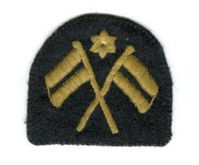
HMS Simbra (FY 321) was a former Norwegian whaler requisitioned by the Royal Navy in December 1941 and converted to a submarine hunter with the addition of a 4" forward deck gun, depth charges and machine guns. The work of anti-submarine whalers could be hazardous. In a surface battle with a U-boat the whaler attempted to dissuade the U-boat deck gun crew with its machine guns whilst the U-boat might similarly aim its 20mm gun at the whalers unshielded deck gun. Whalers like Simbra were also poorly defended from air attack. Simbra operated under the Royal Navy Patrol Service (RNPS) undertaking anti-submarine patrols and convoy support in the Indian Ocean between East Africa, Aden and India. It is not clear where Ken joined Simbra but he probably travelled as part of a troop convoy in order to join his ship during May 1944.
Simbra was one of eight anti-submarine whalers, together with Sorsra, Sondra, Solvra, Sobkra, Sigfra, Mastiff and Lurcher, which made up the East Africa Patrol Flotilla. The Flotilla operated anti-submarine patrols out of the port of Kilindini in Mombasa, Kenya. Because of the threat of a Japanese invasion of Sri Lanka, or a Pearl Harbour style attack, the British Eastern Fleet had relocated to Kilindini in 1942. The Fleet remained there until 1944 when the Japanese were being worn down by the United States in the Pacific and so had become less of a threat in the Indian Ocean.
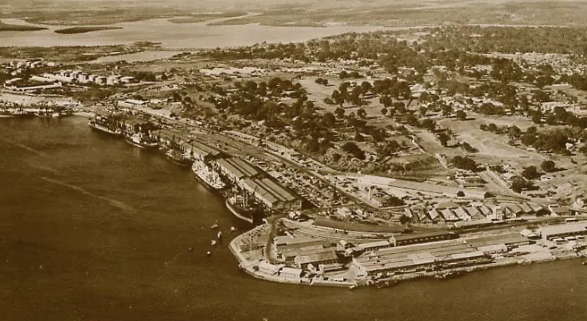
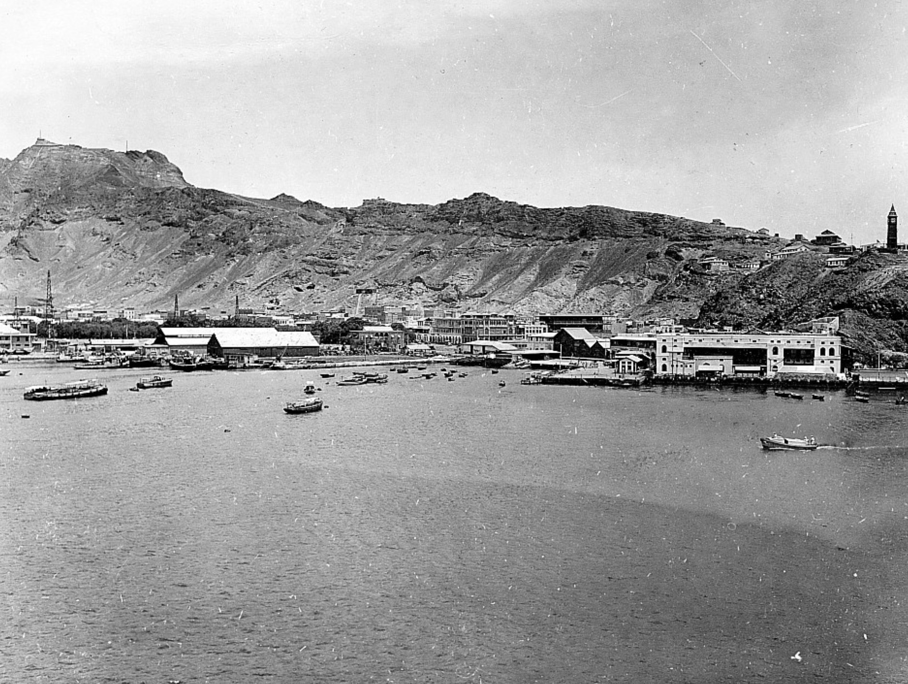
At some point before December 1944 HMS Simbra and HMS Sigfra were loaned by the East Africa Patrol Flotilla to the Aden Escort Group in Aden 1,220 miles north of Mombasa. Here they would have carried out a convoy support role helping to maintain communications and supply between Suez, East Africa and India. We know that Ken was in Aden, at the shore base HMS Sheba, in August 1944 as it was in Aden that he took and passed an examination for promotion from Ordinary Signalman to Signalman.
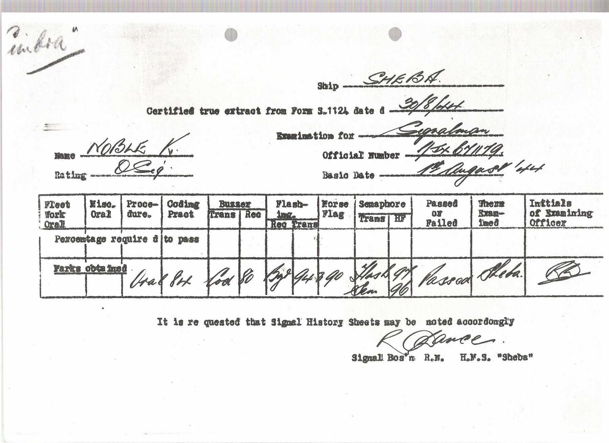


Aden, November 1944
The crew of HMS Simbra, 1944


After 10 months of patrol and convoy work in the Indian Ocean and East Africa, Ken left Simbra in February 1945 whilst in Massawa, Eritrea and transferred to the Eritrean shore base HMS Bull. Massawa had previously been the home port of the Italian Red Sea Flotilla before the Italian defeat in Africa in 1941. Ken's posting was a short one as later that month he was transferred again to another shore base, HMS Tana, back in Kilindini, Mombasa, Kenya. Ken eventually arrived back at HMS Sheba (Aden) where he joined a convoy to Mumbai in India, arriving at HMS Bragnasa in late March 1945. By April 1945 Ken was posted again, this time to HMS Mayina a large inland transit camp in Sri Lanka. An account of HMS Mayina at the time described it as follows-
"I n the camp were thousands of sailors who were to form the biggest fleet ever assembled for an invasion of Japan. Conditions in the camp were pretty grim - water was strictly rationed - and was delivered to the camp each day by tanker lorries. T here were snakes and scorpions, and 'tree-rats' which lived in the trees, together with many strange noises from animals and birds which lived in the jungle. Because of scorpions, it was not a good idea to sit on the toilet, so you stood up on it! The heat was intense, and around noon each day we were not to be out of doors in the open, as the temperature could rise to 120 degrees in the shade. Many suffered from tropical boils, beriberi, skin rashes and deafness, the latter said to be caused by insect bite."
As war was drawing to a close in Europe a large invasion force was being assembled in Sri Lanka in preparation for a land invasion and liberation of South East Asia. Ken was part of this build up. For three months from April until July 1945 he was based in Sri Lanka. It is not clear from his naval record what he was doing during this period. He may have been training or attached temporarily to other vessels sailing out of Sri Lanka. Whilst Ken was stationed in Sri Lanka victory over Germany was declared in Europe in May 1945. In the Far East things were still scaling up for invasion.
On 6 July 1945 Ken transferred to a HMS Highflyer, a shore establishment in the large port of Trincomalee in Sri Lanka. As previously Highflyer was Ken's home base but he was actually assigned to the vessel HMS Tartar, a Tribal Class Destroyer. Signalmen (Bunting Tossers ) were allocated to No.6 Mess on the ship.
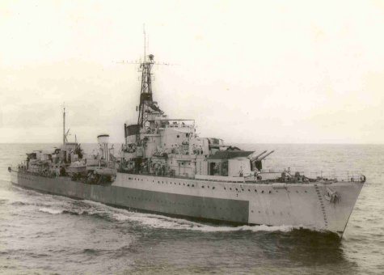
Ken joined HMS Tartar at Colombo on 6 July 1945. Tartar was totake part in Operation Zipper. 'Zipper' was the plan to capture Port Swettenham (modern day Port Klang, Kuala Lumpur) and Port Dickson in Malaya as staging areas for the capture of Singapore. This was the precursor to Operation Downfall which was the planned allied invasion of mainland Japan. Operation Zipper would involve 100,000 troops and was set to begin in the second half of August 1945. The role of HMS Tartar was to provide support by shelling the landing areas from close inshore. This would expose them to the risk of repeated attacks by suicide boats and kamikaze aircraft.
Tartar left Colombo for Trincomalee on 7 July 1945. Throughout July 1945 they were involved in exercises in preparation for the Malay landings that were now put back to 9 September 1945. They were also part of the screen for major units crossing the Indian Ocean in preparation for the landings. Other duties included minesweeping operations and hunting the remainder of the Japanese Fleet. On 10 August Tartar was due to join the fleet for an air strike against Sumatra and Penang but on 14 August they were ordered back to Trincomalee. Atom Bombs had been dropped on Hiroshima and Nagasaki on 6 and 9 August 1945.
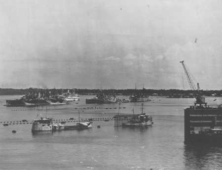
The September invasion never happened as the dropping of the Atom Bombs on Hiroshima and Nagasaki soon forced a Japanese surrender on 15 August 1945. That night Trincomalee Harbour was lit up in celebration.
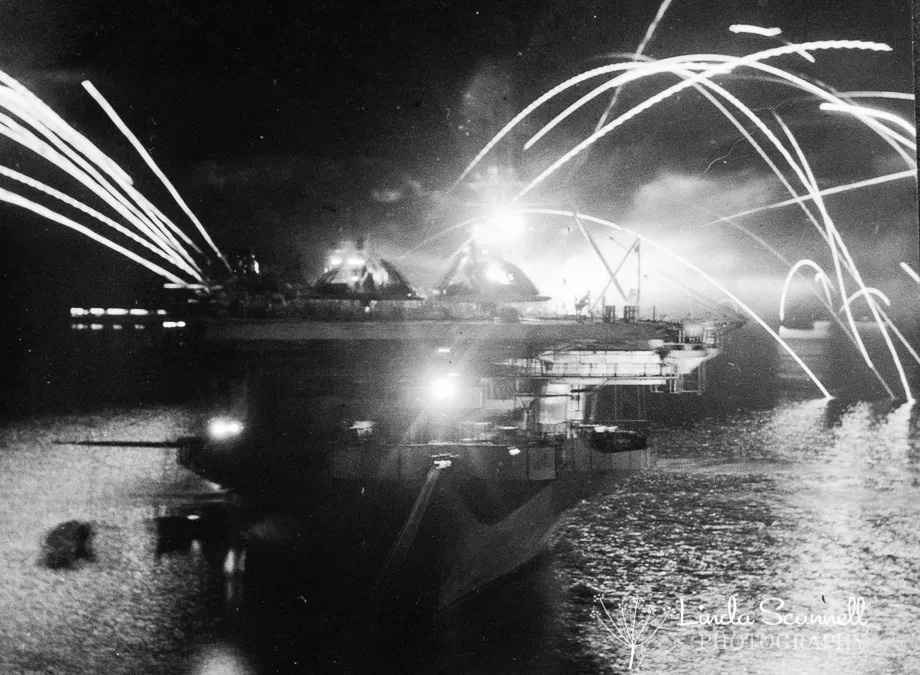
On 17 August 1945 HMS Tartar again set sail with the Fleet to organise the surrender of Penang, Sabang and Singapore. The Fleet arrived and dropped anchor on 28 August 1945 and negotiations began with the Japanese. On the conclusion of surrender talks, British forces entered Penang on 3 September 1945. On 7 September HMS Tartar put to sea again and left Penang for Singapore arriving on 11 September 1945. On September 12 1945 Tartar's crew witnessed the surrender of the Japanese in South East Asia to Lord Mountbatten, at a ceremony in Singapore. It was during this mission that crew members from Tartar were involved in the relief of prisoners of war from the infamous Changi Camp in Singapore and Tartar was used to entertain some of the liberated prisoners.
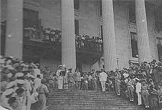
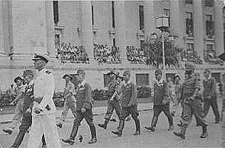
The ship remained at Singapore until 23 September then sailed for Trincomalee one final time via Swettenham, Penang and Sabang, arriving at Trincomalee, Sri Lanka on 28 September 1945. Over the next few days the ships company began preparations for a return to Plymouth. On 1 October 1945 whilst still attached to HMS Tartar Ken's 'home base' became HMS Drake IV a shore base in Devonport. Those transferred to HMS Drake IV knew that they would be sailing home to the UK. Some of the crew were to leave the ship and remain in Sri Lanka. However before crew members parted there was a photograph of the ships company taken on 1 October 1945.
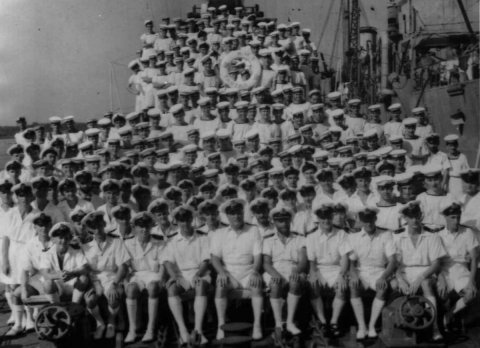
On 15 October 1945 HMS Tartar left Trincomalee for Colombo and five days later set sail for Plymouth. They arrived at Aden on 27 October 1945 and entered the Suez Canal on 1 November 1945, heading for Alexandria. Anti-Jewish riots had seized Alexandria at this time so the crew were confined to their ship and Tartar continued on to Malta arriving on 3 November 1945. After 3 days ashore in Malta the ship sailed on to Gibraltar arriving on 9 November 1945. Five days later they left Gibralter on the final leg of their journey, arriving back in Plymouth on 17 November 1945, ending their month long voyage. After returning to Plymouth Ken remained with Tartar for another month although no doubt enjoying some home leave. On 17 December 1945 he transferred back to HMS Mercury, the shore base where it all began in April 1944. Ken remained with Mercury for about three months. During this time he was attached to HMS Collingwood a shore establishment at Fareham, Hampshire and he spent a brief period aboard HMS Boxer, a radar training ship.
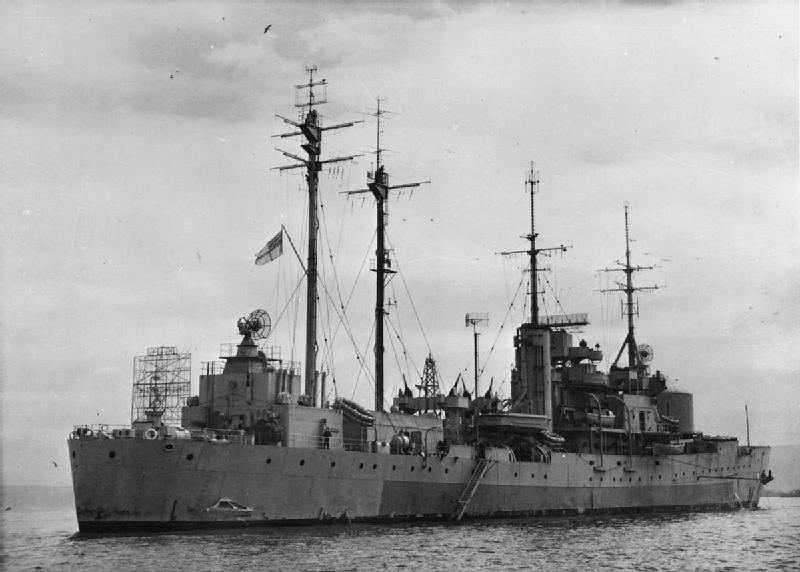
On 26 February 1946 Ken was transferred to the aircraft carrier HMS Formidable. The aircraft carrier had been part of the Pacific Fleet but on its return to Britain in 1946 its hangers were converted to accommodate troops and it was employed on troop carrying runs between Sydney and Portsmouth. Formidable departed Portsmouth for Sydney on 2 March 1946.

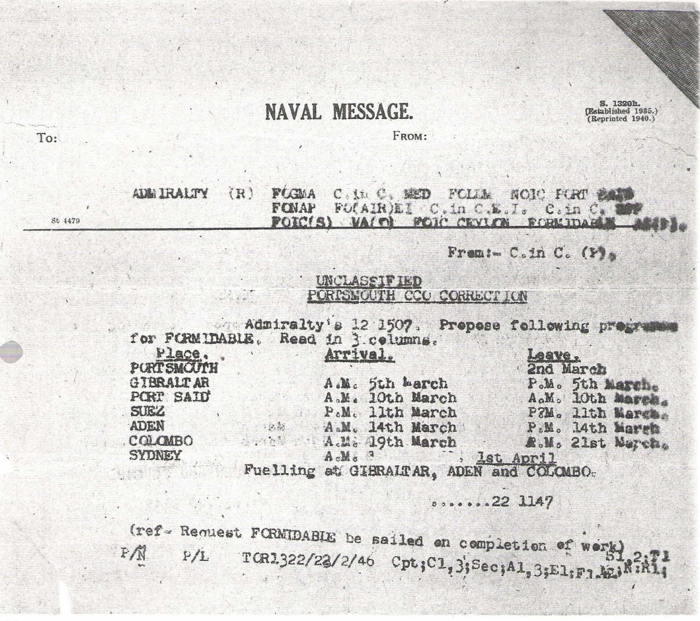
Formidable entered Sydney Harbour (Woolloomoola) on 1 April 1946 where the crew had twelve days ashore to explore the city. It was during this time that Ken was offered a transfer to the Royal Australian Navy but opted to return home.
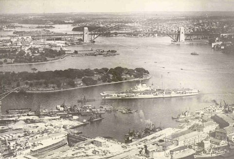
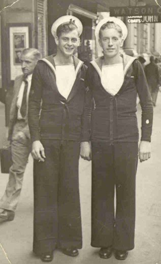
Formidable loaded 1,336 naval personnel together with a number of WRENs and VAD nurses. She sailed again on 12 April 1946, stopping at Colombo to refuel and disembark 576 naval personnel before continuing on to Devonport on 9 May 1946.


On board HMS Formidable, Red Sea, April 1946
On 15 June 1946 Formidable set sail again for Mumbai and Colombo, returning on 5 August 1946.
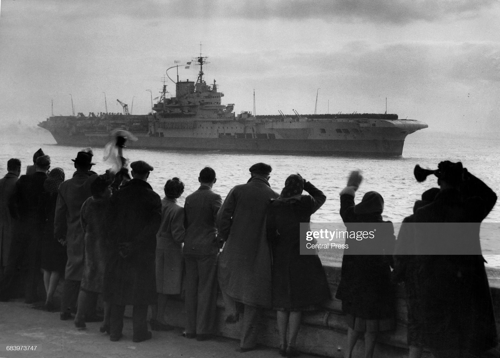
On 14 August 1946 Ken was transferred again to HMS Mercury for the third and final time. During his final month in the navy he was "loaned" to Fort Southwick (an Admiralty Research Establishment) and he served briefly on HMS Rochester, a former anti-submarine sloop which had been converted to a training ship.
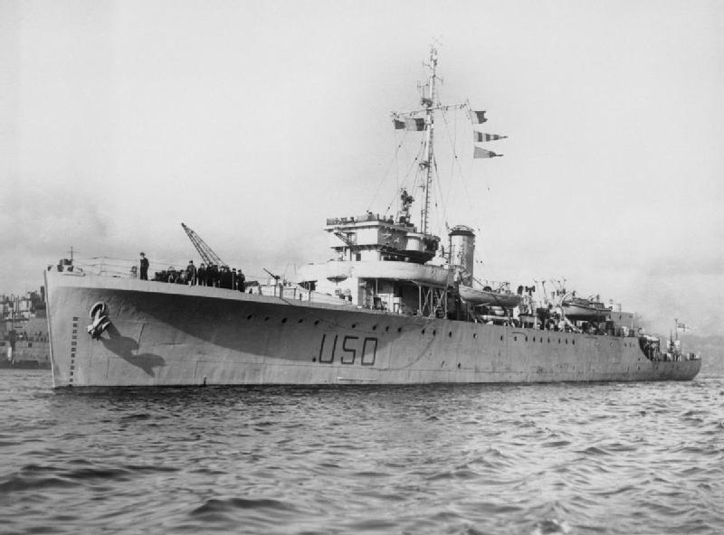
On 4 Oct 1946 he was posted to HMS Victory, the Portsmouth Naval Barracks, prior to his demobilisation on 30 November 1946.
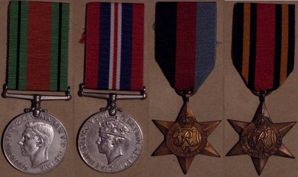
the much sought after badge of the Royal Navy Patrol Service
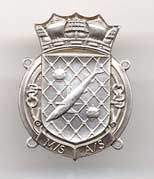